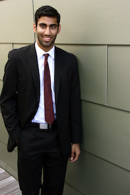
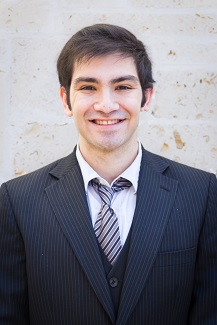
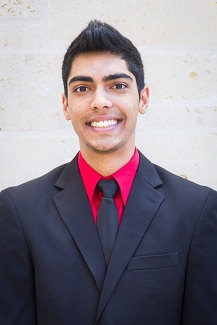
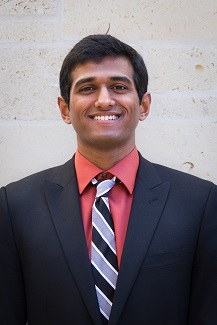

Class of 2018
-
 Aaron Burroughs
Aaron Burroughs
“Make it SLIMEY.” Aaron Burroughs epitomizes what many would call “perfection.” There are two ways of spreading light: to be the candle or the mirror that reflects it. Aaron is both. Why look up at ALL THE STARS (SZA) when Aaron’s luminescence is enough to brighten anyone's day? When he isn’t at 7/11 dancing to 7/11 by Queen B, Aaron is the sole reason why “What Starts Here Changes The World.” As Director of MenCanEnd and a Texas Blazer, Aaron embodies the selfless, amiable, and charismatic characteristics of the man your parents warned you about. In addition to his infinite accolades, Aaron is fluent in Arabic and truly exemplifies how to Baghdad booty up! I’ll let you in on a little secret: in order to attain instantaneous gratification and fulfillment in life, do yourself a favor and simply gaze at Aaron’s impeccable features and raw emotion as he rages on stage. Feel your knees begin to buckle beneath you, and allow yourself to succumb to the sensation that is inevitably going to supersede your greatest fantasy. Above all, Aaron is an amazing friend. His presence alone is enough to alleviate any worry in the world, and Punjabbawockeez is blessed to have him on the team. Even though Aaron plans to graduate this semester and embark upon a new journey, he is destined for greatness, and PJW wishes him the best in his future endeavors.
-
 Stewart Schweinfurth
Stewart Schweinfurth
This German alpha male is unlike any other student on 40 acres. Standing at a mere 5’ 6” and 140 pounds, he has the confidence to take anyone down. One thing is for sure: you don’t mess with this man. Forget Harvey Specter, Stewart is the future lawyer that will make sure you don’t rise up from the ashes once he’s done making his argument against you. He is the one guy that steals the spotlight by wearing ripped jeans at a formal. As intimidating as he sounds, it turns out that this bad boy has a heart of gold. His insane dedication to Texas Blazers and service in general will without a doubt touch your heart. In fact, rumor has it that Corgis at Zilker actually come to him to be petted and receive his blessings. Ladies, if you are looking to find a man with god like charisma, we will be accepting applications at 1-800-YOU’LL-PROBS-BE-REJECTED.  Rishabh Shah
Rishabh Shah
Those who have been fortunate enough to meet the epitome of magnificence and manliness that is Rishabh Shah have described biomedical engineering student from Katy, Texas as indescribable. Women swoon at the mere whiff of his intoxicating essence, and men everywhere fall short of his machismo and sensual prowess. Rishabh Shah’s cleverness is paralleled only by the hypothetical technological singularity that may never exist. Powered by the indomitable will to achieve excellence, Rishabh Shah shatters the expectations of people who have unrealistic expectations. Rishabh Shah is a hardworking individual that is destined to continue achieving greatness. He brings a unique energy to the team, and never fails to make his teammates laugh with his inexplicable brand of humor. He is an invaluable asset to Punjabbawockeez, and we are extremely lucky to have him as a teammate and brother.
 Suhas Tatapudi
Suhas Tatapudi
As the name states, Su Has Tats and pani Pudi's. Mister Sauve-amente uses his tattoos to intimidate those on the court, all while consuming the delicacies known as the pani pudi's. However, pushing basketball to the side and whenever he's not being a secret agent, Suhas is ready to perform Hip Hop anywhere, anytime. Only caveat is that his shoes will disintegrate due to the incogitable conformation this young protégé places upon his body's bearings. If that didn't make sense, then it's ok, because this pupil will be budding soon into Dr. Tatapudi with his extensive Honorary Biochemistry knowledge. And if that's not enough to lull you to sleep at night, then get ready for some Juju on That Beat ;). But wait, there's more! (But how?? He's already so perfect). Well let me tell you how. While striving for greatness in the many sectors of his life, Suhas is also part of an organization called Texas Blazers! Yes, indeed this does mean that he blazes through campus, but not the 420 style. Along the semantic lines of the Blazers, this younglin' goes above and beyond to help change social norms in attempts for equality. (That's a lot, there couldn't possibly be more). Oh but there is! Suhas Tatapudi builds up his J2 street cred by using his powers of being an RA. Once everything boils down, when there's trouble, this superhero will be there on the double!
 Gordon Tsai
Gordon Tsai
It's a bird, it's a plane, it's Gordon the 16 year-old (but now 22 year old) prodigy! The offspring of Jackie Chan and Jet Li, Gordon is truly a gifted specimen. When he isn't busy learning how to drive, he’s going to national Wu-Shu competitions continuing his training to become the ultimate samurai warrior. He was born with a rare ability bend his body in unimaginable ways and chances are if you ever talk to Gordon face to face, you'll actually be talking to his face and his foot side by side. Some even go as far as to call him the first real life Super-Saiyan. But that’s not all; this man is as intellectual as he is flexible. Contemplating a triple major in BHP, Engineering, and Math, the man can truly do it all. Based on his immense Facebook following, you probably already know him and if you think people can't fly, Gordon will show you otherwise.
-
 Adil Virani
Adil Virani
Usually, the "AV Club" refers to the "Audio/Visual Club", but at the University of Texas at Austin it takes on a greater significance: the "Adil Virani Club". Membership includes inferior rival dancers frustrated that Adil's improv moves are better than their most rigorously choreo'd sets; puzzled scientists hell-bent on discovering the secrets to how Adil became human equivalent of a high-octane Ferrari with a nitrous-filled gas tank; 1850's prospectors who think Adil is in possession of rare ore because he's a smooth SILVER-tongued devil with a heart of GOLD; and mothers desperate for their daughters to date such a total class-act. Adil combines science and shrewd business sense, studying Economics and Chemistry while pursuing a healthcare certificate in order to eventually help save lives in the healthcare industry. He would also have a very successful career as a motivational speaker. Adil is indispensable as PJW's hype man and yell leader and is simultaneously the nerd, bad boy, class clown, and hot girl of PJW Academy.
-
 Milan Prema
Milan Prema
The legend of Milan Prema has been passed down from generations of man buns and still strikes a harmonious chord in the hearts “ladkis” everywhere. According to the tale of the salt-bae gujju, he has never been at a loss of words… like ever. His science acumen is so pristine, he lives vicariously through himself. His business card says “Myself Dr. Prema, Don’t Worry I’ll Call You.” He won the lifetime achievement award in somersaults... twice. He’s fluent in all languages, including a jusreign-gujarati fusion dialect which only he speaks. We could revel in his superiority all day, but in short, he’s the most interesting something-one-thing on the team.vertical-align:middle  Jobin Mathew
Jobin Mathew
Behold, the perfect specimen. Well, perfect if being able to put your elbows together isn’t on your checklist. He’s a man larger than life itself. A man with a chest bigger than the state of Mississippi. A man that can bench press another man. But don’t be fooled by his chest of steel, guns blacklisted by airport security, and a mean mug that sends you crying to your momma. His smile, whiter than Ed Hunt, brightens up an entire room. His humor never fails to get a couple rofl-ers. And his giggle? It’s to die for. As a biochemistry student and future dentist with a straight path to every woman’s (and man’s) heart, Mr. Mathew’s natural charisma makes him a lovable teammate. This loyal Punjabbawockee makes an impact on the team that will be cherished for generations to come.
 Nishan Gajjar
Nishan Gajjar
Nishan Gajjar is the man your parents have been begging you to invite over for dinner. His precious smile, rugged beard, and raw intelligence makes him the perfect husband material. Did I also mention he's going to be a doctor too? The beauty, brawn, and free healthcare for life makes this man one coveted human being. Nishan is currently a junior studying Psychology and on the executive board for HOSA. When he's not spending his time saving the world, you can find him sleeping in the FAC, eating Taco Bell, or sharing his feelings with you. Most of all, Nishan is the perfect embodiment of a true friend. He never leaves a fellow PJW behind and he always kills it on stage. PJW is lucky to have him as the best bhangra boy.
 Sailesh Kumar
Sailesh Kumar
Co-Author of the Kama Sutra, Sailesh Kumar is more than just your typical curly-headed Computer Science major at UT. According to the legends, his melodic voice humbles Kanye West, his hard-hitting Bhangra breaks Richter scales, and his charming smile promotes world peace. Playing hard to get? Sailesh will code his way into your heart using his experience at Facebook, where he apparently has a secret handshake with Maxima Zuckerberg. As a local Austinite, Sailesh has a passion for bringing about good in the community and he is a loyal Longhorn until the end, being a part of organizations such as the Texas Blazers. Whether you see Sailesh at a hackathon, in class, or on stage, be sure to kiss his hand and play with his hair…just do it.
 Ziyaad Khayrattee
Ziyaad Khayrattee
Legend told of the coming of Ziyaad. It is said that sages and wise men across the world collectively felt his kicking in the womb, the beginnings of his divine dance. When he was born on the distant island of Mauritius, an energy swept across the globe, causing even the most hard-hearted of Wall Street analysts (of which he would eventually become a part) to convulse in joy. But young Ziyaad was destined for great things, he soon set out on his odyssey across the seas, and, after conquering nations as well as the hearts of many women, he settled down. He now hails from the Land of Sugar: a suburb of Houston, Texas, and the third best city in the U.S., according to a few arbitrary rankings in obscure publications. These days, Ziyaad attends a university (mostly to keep up appearances; he's learned everything he needs to about the world already in his epic voyages). You might find him giving a TED talk here and there. For real, go look up his TED talk now; it's glorious. People always ask: Ziyaad, do you try and make ladies of the court swoon as you walk by? In response, Ziyaad smiles effortlessly, and a lady somewhere feels their heart throb and their knees buckle.
 Ben Carver
Ben Carver
“Life is short. Slow down and play some Yu-Gi-Oh” – Ben Carver, probably. With how fast modern society moves, it’s important to take some time off for yourself. No one epitomizes this idea more than Benjamin Cezar Amadeus Carver (yes ladies, those ARE his middle names). This embodiment of fun and good vibes isn’t all play – he’s also studying Business Honors and has finagled himself a consulting job at Sense Corp. When he’s not saving a corporation’s livelihood, you can find the Human Bentipede playing Skyrim as he slays hordes of dragons as the Dragonborn. Everyone else on the team looks up to him, both physically and in Bhangra. While starting the year as a newbie, he has quickly become a core part of Team Book Len Day. Even if you get him confused with the OTHER White Guy #1, be prepared to let him FUS RO DAH his way into your hearts.
-
Viraj Chaudhary
As the only authentic Punjabi member on this team, Viraj is the anchor that holds our team to the name "Punjabbawockeez." He is also our in - resident Bollywood superstar. If you need help on choreography or dance skills, he's your man. In addition to all of this, Viraj is a Computer Science and Finance double major who will be working at Goldman Sachs this summer. How does Viraj power all of this awesomeness? One word. Qdoba. The fuel that powers this great man exists in the humble combination of rice, beans, chicken, queso, and guacamole. Our team see's the incredible power this mystical substance has on him. Like Popeye with spinach, Qdoba is the substance Viraj consumes before practice and performances. This elevates him to a superhuman level of dance that is observed in his god - like bhangra performances.
-
Abhay Divakaruni
Abhay’s mind is always running at the speed of light, but this former Valedictorian is more than just brains. Abhay’s creative mind and passion for dance are truly inspiring to see in action. You may recognize the seductive afro of his hair from the TEDxTalk he delivered on the magic of dance. And of course, Abhay also knows how to party and let loose when the time is right. At UT as a Forty Acres Scholar, Abhay studies Business Honors and Plan II Honors, and he is a proud member of the service group and host of our University, the Texas Blazers. Abhay is a kind-hearted soul with a bright future filled with success, but most of all he is a dear friend and a treasured teammate. His Beyonce pose will leave you speechless and gasping for air! Ladies, take note of this one! He is a rare specimen.
-
Ed Hunt
Ed is the man your mother warned you about. Often referred to as the Godfather of suave, Ed is the synergistic creation of fatal attraction and intellectual prowess, sort of like Ron Weasley meets Wall Street. Ed managed to get 364 girls' phone numbers last year, which really pissed him off, because he was just shy of 1 girl a day. Serving as vice-chair of public relations in Texas Blazers, Ed puts the elation in public relation. His essence is the psychological triumph of grace over order. His body and soul were both meant to bleed burnt orange. His ferocious red mane entitled him to be king of the jungle. However, this beast has his own peculiar cuteness which is best described by Mark Twain himself: "While the rest of the species is descended from apes, redheads are descended from cats."
-
Shamis Khan
Faster than a speeding bullet. More powerful than a locomotive. Able to leap tall buildings in a single bound. Often mistaken as a bird or a plane, Shamis Khan minds not. In fact, the modest hero passed much of the credit on to his sidekick, Clark Kent, and realizing that anonymity was the greatest defense for his loved ones, Mr. Khan hung up his cape long ago, settling into the peaceful life of a Business/Pre-Med student at The University of Texas at Austin. Now and then, one hears legends of Shamis Khan—how hurricane season in his hometown of Galveston is really just his allergy season or how solar eclipses sometimes occur when Shamis hoops on the weekends. Alas, although his selfless service to the people of this wonderful planet has come to a close, one can see remnants of his forgotten life in the majestic hip-hop he unleashes onstage. And that is his true selfless service. Thank you, Mr. Khan, for continuing to show the people of this planet that there is still magic in the world.
-
Arjun Merchant
Arjun Merchant, greatness personified. As a child, he had to change his last name because he could never help but deliver the goods. Reigning from Sugarland, Texas, it’s only fitting that this Punjabbawockee has some of the sweetest dance moves around. In fact, Arjun’s audition for the team included an unforgettable performance inspired by the moves of the very own MJ himself. Fedora and all, it’d be an understatement to say this “smooth criminal’s” dance was anything short of a “thriller”, and yes, “he rocked our world”. When Arjun isn’t busy charming everyone with his killer smile, contagious laugh, and sharp dressing, you’ll find him working towards getting a degree in Biomedical Engineering (not to mention he’s Pre-Med too…doctor AND engineer?!?! My goodness.), getting published with all his work in the University of Texas’ research labs, volunteering, or hooping it up at Gregory Gym. A genuine individual, an ideal teammate, a mesmerizing dancer, and as mentioned above, the deliverer of goods, Arjun has, without a doubt, been an incredible addition to the Punjabbawockeez.
-
Arjun Mocherla
Arjun "Ladies call me Arj" Mocherla can be found all around the forty acres sporting cowboy boots, sparkly pearly whites, and groomed hair so sharp it'll cut your heart in two. Luckily, with his doctoral credentials he'll sew that baby back up in less than a heartbeat. Whoever created this fine specimen of man spent a little bit more time on him than other humans. His flawless character and sculpted body is what every man, woman, and child seeks in life. Captivating women’s attention with the flick of his lasso (on him at all times), this cowboy is the man of any girl’s dreams. His beauty can be a curse at times; being constantly booked with dates to his favorite local coffee shops! When he’s not making the girls of the world swoon, Arj trades in his lasso for books as a pre-med, pre-law, Plan II Honors & Public Health dual degree at The University of Texas at Austin. He is also a Vice-President of Texas Student Media Board of Trustees, a Camp Texas Counselor, and an active leader in Tejas, the premiere men’s organization at The University of Texas at Austin. This is the guy that the aunties compare their sons to and always ask them, “why can’t you be more like Arj?” Arj is a genuine man and it’s amazing seeing this guy rage on stage. A little word of advice to the ladies out there: act now to have a chance with this amazing guy or you’ll have to settle for a guy who’s….well not Arj.
-
Kunal Patel
In accordance to Urban Dictionary, a Kunal is always the coolest guy in the club, an absolute party animal who always has a way with the girls. From my knowledge of Mr. Kunal Patel, no one can keep their paws off this piece of fine Indian meat. Not only does he have the most tagged photos on Facebook (primarily with females), but he is also a thriving leader for Punjabbawockeez. Kunal is always willing to go out of his way to help a friend - be it for dance practice, to study for a test, play Nintendo 64, or just vent about life. Despite his unquestionable popularity and super rough exterior (lol), Kunal is a sentimental guy who genuinely cares about his friends. In reference to the Sanskrit definition, Kunal is the name of one of the Himalayan birds with beautiful eyes. I don’t think Kunal Patel is a Himalayan bird; however I do know he is someone who sees beauty in everything.
-
Allan Wang
Talented, handsome, and sweet? Only one place to find that in the world, and it's Allan Wang. Allan is the guy who works out every day, but doesn't need to brag about it. Allan is the guy who would have all the ladies fawning over him, but still devote his heart to his one beloved. Allan is the guy your mother warned you about. He break dances, he juggles, he swoons. There is one quality that sits high above the rest. While he is an incredible dancer, has impeccable style, and a genuine smile that will make your clothes fall off, the real catch is the big heart under that strong exterior. The soft sensitive Allan loves long walks on the beach, and intimate conversations. The tough Allan loves benching 315 pounds. He's a beast in bed, on the court, on the dance floor, in the classroom, and quite literally everywhere else. He's the man you deserve, and definitely the one you need right now. So hunt him. Because he can take it. Because he's our hero. He's a silent guardian, a watchful protector. An Allan Wang.
-
David Yu
Once you meet David Yu, Yu gon’ be wanting more of this guy, and the ladies can attest to that. David was born in Louisiana, which explains how he hits the stage like a hurricane, bringing a little Kung POW! to the stage as he Bhangras like he was born in the depths of India. This hunk is a senior with a Business Honor major here at UT Austin and is well on his way to success at McKinsey & Company consulting firm in Dallas so hopefully he can hold his ground as a faithful Spurs fan in The Big D. In his spare time, David likes to work out to make sure he stays a lean, mean, loving machine and plays ball, hoping to be the next Tim Duncan, but looks more like Jeremy Lin. For any points he misses on the court, he makes up for by scoring with the ladies anywhere he goes. In fact, David likes to clean his feet after every practice because he wants to be that slick for the ladies. When he’s not dancing, balling, or chatting it up with the honeys, David participates in Texas Blazers and helps make the world a better place, one day at a time.
-
Chintan Gohel
Tall, lean, and handsome, Chintan Gohel sets the bar high. He is a full-fledged Bhangra and Garba monster. The beats are in his bones, and there's no stopping him when he starts feeling the music. He practiced so hard after joining the team that his foot had to heal for a good three months, protected by a big, black, boot. But this didn't stop Chintan. Despite his injury, Chintan made sure to show us that even the stanky-leg can be bootylicious. Chintan wants to go to med school, but with a face like Matt Bomer's and a body like Ryan Gosling's, just one quick look at Dr. Gohel would probably solve all his patients' problems. His quick mind and his dashing looks make him a Longhorn version of Barney Stinson, but don't be fooled. Chintan is a hopeless romantic like Ted Mosby. With a knack for proposing to girls on the spot, Chintan has all the ladies lined up to be Mrs. Gohel. The two ways to win his heart are through dance and sarcasm, and this explains why we expect Chintan's next proposal to be to the team. Most of all, Chintan embodies the qualities of a true friend and teammate, and his passion makes him an inspiring addition to Punjabbawockeez.
-
Shakir Hassan
Born with perfectly sculpted 8-pack abs, Shakir Hassan was raised near Houston, Texas before he came to UT Austin. At an early age, Shakir realized he could sell his sweat to others as a drink called Muscle Milk. Whether it’s running long-distance relays of 200+ miles, outlifting everyone at the gym, or inventing new dance moves, Shakir can do it all. And his hair will always look perfect while he does it. In fact, the creator of P90X regularly calls Shakir for life advice. Don’t be fooled by his absent-mindedness, ladies. If Shakir can manage to keep his focus on you, you’re in for one unforgettable time. They don’t call him “Shocker” for no reason. When he’s not flirting or dancing, Shakir works hard toward his Kinesiology degree and his role as fitness coordinator for Texas 4000. Yes, that’s right, he even finds time to fight cancer. If you can’t find Shakir at Gregory Gym, he’s probably making smoothies for famous Austinites at Pure Austin Fitness, or figuring out what shoes go well with his tight pants. This busy man is a valuable addition to PJW and a valuable friend to those who are lucky enough to know him!
-
Ryo Kurita
With his fame and charisma flowing through all of Texas, Ryo Grande sets himself apart as a secret weapon and true champion on Punjabbawockeez. Bringing his Asian roots to the stage, he adds an incomparable dose of natural break dancing and hip-hop talent to every show. Ryo has the flawless ability to nail every move on his first try, and he also knows exactly how to help others reach his level. When Ryo’s not making a statement with his business honors and finance majors, he spreads his charming enthusiasm and fun-loving spirit all across campus as a member of the UT Longhorn Band and the Texas Blazers service group. When it comes down to it, you won’t need to go to Rio, Brazil to see the 2016 Olympics. Ryo Kurita represents all of the athletic prowess, hard work, and sportsmanship of the Olympic games everyday.
-
Sahil Naik
A true hybrid between medicine and business, a sparkly brown fusion of Gregory House and Tony Stark all mixed up into one human cocktail, Sahil Naik is the man you wish you were. Aboriginal folklore recounts that Sahil once won a sleeping competition with a Koala. However, little do people realize that Sahil is never truly awake NOR asleep. He resides in lucid dreams so lucid that he can make your dreams a reality as seamlessly as Leonardo Di Caprio. Legend has it that Sahil is the second coming of the Greek hero Achilles. It remains the only logical explanation of why the back of his foot aches after each practice and why he dances Bhangra with an unbridled fiery energy so fierce, only Zeus and his entourage could contain him. Taking PJW and UT by storm from the Texas Academy of Mathematics and Science, Sahil has convinced researchers that he is evolutionarily superior to the average man when it comes to the ladies because he learned how to extrapolate all the curves at a very early age. Ladies and Gents prepare yourselves; Sahil Naik is on the prowl.
-

Shreyas Panda
Don't let the name fool you; this is no cuddly panda bear. Panda is one of the tallest guys on the team, and when he gets groovin' to some N-Sync, the shirt comes off, and the rest of us guys are shown up. Shreyas jams out to hip-hop, but with his enormous leap and high-level energy he can also dominate at Bhangra. His jumping prowess comes from his second job: baller, and I mean that in more ways than one. Get a basketball in this guy's hands, and you won't get it back. Find Shreyas at ACL, and girls will violently flock to him, to the point where he leaves nearly injured! When this kid isn't busy scoring hoops, chicks, or moves on the dance floor, you'll probably find him inventing the next big Apple product. Dancer, Baller, Scholar. I guess in the end it does boil down to his name: Panda's from the wild.
-
Shaan Patel
Shaan Patel is more than just a man. He is a state of mind. However, in order to fully grasp the meaning behind this concept, you must already have achieved the Shaan Patel State of Mind #getonhislevel. But seriously, to all the Patelites out there, PJW has a rare gift for you: Your Punjabbanaut has landed... on the dancefloor. This champion reigns from the ch-chopped and screwed village of H-Town, where he grew up tippin' on four fours and refining his business skills, working his way to that MPA degree, all to the rhythm of "Still Tippin'" by Mike Jones Feat. Slim Thug & Paul Wall. And to this day he has never missed a beat. Shaan Patel redefines the meaning of "jaw-line." If you look closely, Nike actually modeled its logo after his protruding chin. But don't feel left out. Shaan is such a kind heart that he wants the world to enjoy the facial perfection that he experiences daily. So he's currently working on a chin cream that will do just the trick. It’s called Patelixir of Chin. In stores this Christmas season. A famous Disney movie was actually based on Shaan's first novel, Chinderella. Don't worry, he gets royalties for it. He graces the dancefloor with ease and utter patelegance. He's one-upping Oprah by not only creating a new network, but a new viewing experience: Patelevision. He can command anything to dance without even touching it because he's Patelekinetic. He thinks it's cute when people give him awards, so instead he makes his own. Ever her of the Shaan Awards? 'Nuff said. This just in: Webster's dictionary has recently made an emergency entry: "Jaw-line: See Shaan Patel."
-
Arpan Amin
When Arpan Amin was a kid, he didn't sleep with a teddy bear; he preferred a real one. Nowadays, Arpan is the proud captain of his intramural football team, the Guadalupe Fiascos. As a lover of all things sports, he wants to visit all of America's great sports stadiums over the course of his lifetime. When he's not out on the football field, he's likely to be banging on his drum set or studying for his MIS degree. After years of "clowning" around, Arpan released his hit single "Squeak Squeak, Juggle Juggle," which is currently working its way to Billboard's Hot 100. After college, Arpan plans to travel and share himself to the rest of the world's most exotic women.
-

Suraj Makhija
This Punjabbawockee will be the first to tell you his favorite color when introducing himself: yellow. From yellow polka dots and yellow cheese to the song "Yellow," Suraj really knows and loves his yellow. But, besides Suraj's voracious appetite for all things yellow, he's a Biomedical Engineer in training, aspiring to build the first ever truly yellow animal. Being an ex-drum major, Suraj brings a strict and perceptive eye for cleanliness to the team that no one can match. Suraj is the perfect fit to a team of Bhangra-ing brainiacs, not to mention his dashing Aladdin-like face and charming personality.
-

Ronak Patel
Ronak Patel. This pre-pharm sophomore is pure shock and awe. You never know what he will do next! One day, he whips out crazy Jackie Chan style moves, while the next, he tantalizes you with his perfected accents. Never pay for a comedy show, just hang out with Ronak instead! This amusing man will never allow a dull moment to exist. Whenever he "be in his city", you know it's about to get crazy! On the dance floor, he is a monster, performing insane stunts no one else can. He brings such ferocity to PJW that even Liam Neeson can't handle it. Ronak's heartfelt passion, amazing skills, and sexy body bring a completely new side to PJW. Ladies, meet Mr. Tall, Brown, and Handsome. He is ready for you.
-

Abhijith Ravinutala
Abhijith has been the inspiration for the Old Spice Guy, Barney Stinson, and the Most Interesting Man in the World ever since he joined Punjabbawockeez. When you aren't swooning over his flowing mane of black hair, you are being blown away by his double major in Business and History. Abhijith hails from Dallas and can show you how to D-Town Boogie like no other. His Southern Indian dance style comes out through his seductive hip movements that have been proven to make women faint. Shakira wrote "Hips Don't Lie" after she spent a wild night downtown with Abhijith. In a recent interview, she was quoted as saying, "He taught me everything I know." Abhijith's contribution to PJW and the world of dance has been so great that everyday P. Diddy wakes up feeling like him. From head to toe, Abhijith is the perfect mix of business and pleasure.
-
Shiv Rawal
Shiv is a valuable gem on Punjabbawockeez, not only for his captivating Bhangra, but also for his rugged good looks, his American Dad jawline, and his million-dollar smile. We always knew we could use an exceptionally handsome and charming party animal among the second generation of PJW. Who knew Plan II and Government would turn girls on? When Shiv joined PJW, freshman girls would join ISA just because Shiv was Membership Coordinator, but it's Shiv's overflowing kindness that makes him unbeatably the most eligible bachelor at UT. Bringing that West Coast swag, Shiv is the coolest kid on the block. With his brains, looks, and Bhangra, Shiv is the total package.
Class of 2016
Class of 2015
Class of 2014
Class of 2017